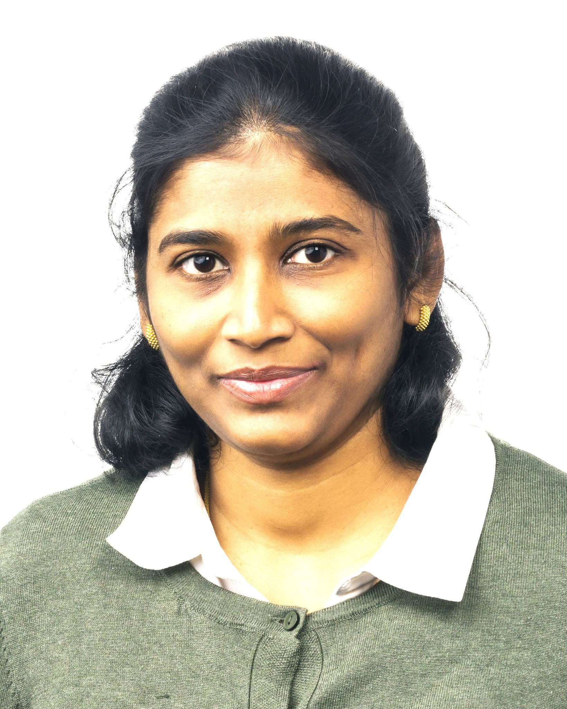

Intelligent Data Movement
Make data placement, movement, retention and regeneration decisions using workload context.
VMNexa Labs develops technologies that make AI and scientific computing more adaptive, efficient, and data-aware — from the runtime to the memory hierarchy.
Modern AI workloads are limited not only by computation, but by the movement, placement, provenance, and changing value of data. We build systems that reason across these dimensions.
Make data placement, movement, retention and regeneration decisions using workload context.
Runtime abstractions and scheduling policies that respond to memory pressure and data affinity.
Scalable systems for multimodal scientific workflows, simulation data and streaming analytics.
Performance engineering across GPUs, CPUs, memory tiers, storage and emerging architectures.
We bridge rigorous systems research and deployable engineering to address problems where conventional infrastructure falls short.
Architectures that treat data as a first-class systems resource.
↗Performance-aware pipelines for resource-intensive AI and scientific workloads.
↗Fusion and reasoning across heterogeneous, asynchronous data streams.
↗Collaborative technology development with research and industry partners.
↗Our research explores the next layer of computing infrastructure: systems that understand workload structure, data relationships and resource state.
Computational history becomes a signal for runtime decisions.
Joint reasoning over computation, movement and memory state.
Streaming and scientific workloads that evolve as data arrives.
From theoretical foundations to runtime prototypes and benchmarks, we turn hard computing problems into measurable system advances.
VMNexa Labs focuses on the technologies beneath modern AI: the systems, data paths, runtimes and computational infrastructure that determine what is possible at scale.
We work across research and engineering to create technologies that are rigorous enough for the lab and practical enough for deployment.
VMNexa Labs combines research depth, systems expertise, and technology vision to build the next generation of intelligent computing infrastructure.

Founder, VMNexa Labs
Computing systems researcher and technology leader focused on AI, high-performance computing, data-centric systems, multimodal scientific workloads, and intelligent computing infrastructure.
Co-Founder, VMNexa Labs
Working with the founding team to shape VMNexa Labs' technology, strategy, and long-term vision.
Research collaboration · Technology partnerships · Strategic R&D
hello@vmnexalabs.com ↗